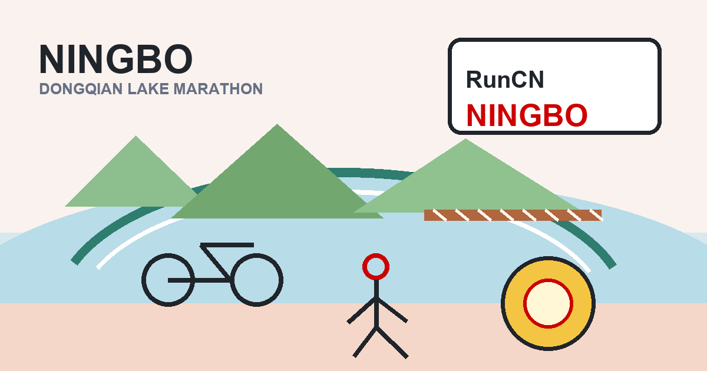

Ningbo turned a lakeside marathon into a warm farewell
Race date: Dec 8, 2019. A full marathon around Dongqian Lake, plus a cycling warm-up, an old friendship in Ningbo, and a walk through Fenghua history.

Dongqian Lake was not only a race course. For this 2019 trip, it was a way to say goodbye before returning north, a reason to ride around the lake, and a reason to meet an old friend without the awkwardness of youth.
Ningbo · Dongqian Lake
- Message from Ningbo -
Who went to Ningbo for a marathon, only to be caught by curry, lakes, and love?
Preface
In the last month of 2019, the cold nights in the north are already snowing heavily, but in the bright sunshine in the south, it is still like spring all year round.
I love the South as much as I love the first rays of sunshine in the morning, but the theme of December is farewell.
Before returning to the Northeast, the Dongqian Lake Marathon was just in time. I drew a 42.195 to meet the girl I liked. There is no better way to say goodbye than this.
01
Cycling was just right
The Dongqian Lake Marathon is held in Ningbo, which is located on the southeast coast and is one of the oldest ports in China. In "Three Poems on Returning to the Fields", Bai Juyi, a poet of the Tang Dynasty, described the two very different worlds of Chang'an in the West and the special realm of the East China Sea as "the dust in the West is vast and the East China Sea is romantic".
But the purpose of my trip was not to see the sea, but to go around the lake, the largest lake in Zhejiang, Dongqian Lake.
I once heard a poem that said, "The West Lake is a great place to visit, but who can say that the East Lake is more tranquil. One hundred and fifty passengers passed by in boats, and seventy-two streams of spring water flowed." So I always thought it was praising the East Lake in Wuhan, but later I found out that Yuan Shiyuan was talking about Dongqian Lake.
When we arrived in Ningbo, we first went to pick up the horse racing equipment. As a result, we took one extra stop on the bus and went directly to the Dongqian Lake Visitor Center, where we came across a bicycle station. I was still hesitating whether to cycle around the lake, but this meeting strengthened my determination to ride.

For Dongqian Lake, driving is too fast and walking is too slow. Riding is the only option.

I rented a bicycle at 10 o'clock in the morning. This time I was fully armed. I carried a Feiyu stabilizer and a Mavic drone on my back, an Osmo action camera in front of the bicycle, put on my helmet, and set off!

My route around the lake is a circle along the outside of Dongqian Lake. It can be said to be a mixture of several routes in the picture. The general route is:
Bicycle Station—Guojiazhi—Hanling—Shilisixiang—Shuanghongge—Ningbo Youngor Zoo—Dongqian Lake Town—Bicycle Station.
Not long after setting off, I came across the marathon track on Fengqian Road, and the signs were clearly visible.


After passing the Dongqian Lake White House, you will arrive at Tianluo Mountain. The legend of Tianluo Girl is spread here and is also the image of the Eight Beauties of Qianhu Lake.


I speeded up my riding slightly and arrived at Hanling, an Internet celebrity, at about 16 kilometers. The old street is surrounded by mountains on three sides and faces a lake on one side. Time has left here an ancient village in the south of the Yangtze River.

The old houses of the past are preserved here, which can recall the housing characteristics of old Ningbo.

Every corner of the old street is clean and full of life, quiet and full of human fireworks.


After leaving Hanling, I originally wanted to pass through Xiaoputuo, but the bicycle was not allowed to enter, so I finally continued around the lake and came to Qianyantou Village in the afternoon.

The sun was shining just right, and on the path in front of the village, a group of lovers and running men passed by me. I simply stopped, took a flight, and enjoyed the afternoon in the Jiangnan water town.

The rest of the journey passed through some villages and scenic spots one after another. When I returned to the station, I saw that I had only ridden 43 kilometers. Compared with the 120 kilometers of Erhai Lake, it was very easy. It was a good way to warm up for the marathon.

02
Running, with love that does not run out
Returning to the topic of horse racing, let’s first talk about picking up equipment. The items were collected at the Dongqian Lake Water Park. The volunteers were very considerate. They probably knew that there were no print shops nearby, so they specially prepared registration confirmation letters for the players, so you can fill them out by yourself. Picking up the items went smoothly. Although the scene was not big, it was very efficient.

As one of the cities with the best running atmosphere in China, Ningbo hosts five marathons a year, and the Dongqian Lake Marathon is the last one of the year.

Since it is the final race, it is naturally at the end of the year. Even in Jiangnan, the temperature in the morning is only a few degrees, so the players all come to the starting point wrapped in down jackets, and then reluctantly take them off.


There was a warm-up at the starting point of the event. Everyone huddled together to share body temperature and sang the national anthem together, which made people excited. The warm-toned atmosphere of the morning light also made me gradually forget about the cold.

The host is Han Qiaosheng. I had met him once in Northeast China before. When I heard Teacher Han’s voice again this time, I felt particularly cordial.

I started running against the sun. It was very beautiful. It suddenly reminded me of Haikou, a very familiar scene. I thought that I would not quit the race this time.

One kilometer away, we arrived in front of Tianluo Mountain. The sun shone on Dongqian Lake, which was full of picturesque scenery.

Next, we temporarily ran away from Dongqian Lake, and everyone ran along Yincheng Avenue to the surrounding villages and towns.

I originally planned to follow the 430 rabbits, but ended up running behind the 400 rabbits in good condition. The first few supply points only had water and drinks, which I didn’t really need. After ten kilometers, I started to scientifically replenish energy gel and some water.

It was 20 kilometers before we met Dongqian Lake again. Half-marathon runners were running to the finish line one after another, and the track suddenly became empty.
The rest of the journey was the real test for us 2,000 marathon runners. The temperature gradually rose, and my body had warmed up. It was quite comfortable to run. I passed by Hanling Old Street again, and there was a faint sound of cheering on the roadside. I followed my own pace, neither chasing nor catching up, and kept moving forward.

The turnaround of about 30 kilometers in the middle was a bit boring, the big uphill climb of 33 kilometers was very brutal, and the big downhill of 35 kilometers was simply awesome. I really climbed through that two-kilometer uphill section, and the rest was smooth.


In the final journey, I had the tea garden girl cheering me on, the continuous turns were connected by mountains and rivers, and I met a flag runner in Dongqian Lake Town. In short, when I was supposed to hit the wall, the fun of the track was greater than the fatigue, and it didn't let me stop to finish the race.


I finally crossed the line at 408. Although I didn’t break 4, I was quite satisfied.

I wasn’t very tired after the run. After stretching, I could still walk vigorously. The medals looked pretty decent. There were enough shuttle buses after the race, but the distance was a little far, which was not very convenient for some finishers.


In short, the Dongqian Lake Marathon was a good experience for me, although my physical condition has not been adjusted to the best yet, and although I will not be able to compete for a while. But I will never end my passion for running, and I will continue to run.

03
This time, seeing the girl was not awkward
I defined this trip as a "party by Dongqian Lake". Horse racing was just a reason to come to Ningbo. On the other hand, I also wanted to see my old classmate Miao'er.

I have never concealed my love for Miao'er. We were classmates in high school and college. Miao'er was also the girl I once couldn't chase, and now I am my old friend.
I think we have all experienced those young and youthful times. When time makes us fade away from embarrassment and leave behind a friendship, it is valuable.


After the ride, Miao'er treated me to Indian curry and felt the style of Ningbo's Laowaitan.


After the horse race, I had an appointment with Ningbo cuisine. I was moved by the enthusiasm of my old classmates, and I felt more cordial than meeting an old friend in a foreign country.

This year we attended the wedding of high school veteran Tie Baoxin. We deeply feel that as we grow older, time is like a big wave washing away the sand. Friends who once talked about everything have gradually turned into close friends, and even no likes in the end.
Every time I travel, if time permits, I hope to see old friends. If love has a shelf life, friendship will last forever.

04
Two sides: getting closer to Chiang Kai-shek
I went to Tengchong not long ago and was deeply shocked by the tenacity of this group of Chinese expeditionary troops. So out of curiosity, this time I went to Fenghua, Ningbo, Chiang Kai-shek’s hometown.
In the turbulent modern history of China, Chiang Kai-shek is undoubtedly one of the most complex "figures of the hour." He has gone through the process of going from myth to scandal in Taiwan, and is also going through the process of being de-"caricatured" on the mainland, and his evaluation is gradually neutral.

On the first day after the horse race, I first went to Miao Gao Terrace in Xuedou Mountain, Xikou. Miao Gao Terrace was a private villa built by Chiang Kai-shek in 1927. This was also Chiang Kai-shek's behind-the-scenes headquarters when he was in power and witnessed many major battles.


Not far from Miaogao Terrace is the "Xuedou Mountain Guest House", which was once the place where Zhang Xueliang was placed under house arrest. After the Xi'an Incident, Zhang Xueliang was escorted to Xikou by Dai Li and then imprisoned here. It was known to the outside world as "Mr. Zhang Xueliang's Guest House".

Zhang Xueliang was 37 years old when he was taken to Xikou. He was held there until he was over 90 years old. This was his first stop under house arrest.

We went back and passed the Maitreya Temple at Xuedou Temple. It is said that this is the tallest sitting bronze Maitreya Buddha in the world. It is really shocking.

In the afternoon, we visited Fenghua, Ningbo, Chiang Kai-shek’s hometown. Here we witnessed how Chiang Kai-shek grew up to be a man of great influence.


The Wenchang Pavilion at the top of the city was once the private villa of Chiang Kai-shek and Soong Meiling. The stories inside are still talked about today.


Today, Fenghua has become a tourist attraction. The most common saying among fellow villagers is "Don't forget the Communist Party when you are liberating, and don't forget Chiang Kai-shek when you get rich."


These days coincide with the "National Memorial Day", and the education we receive always seems to tell us that Nanjing was a rout, or even a rout, and that Chiang Kai-shek did not resist the Japanese.
In fact, before the battle to defend Nanjing, Chiang Kai-shek once asked his subordinates: "Who is responsible for defending Nanjing?" The response to him was deathly silence. Chiang Kai-shek said: "If no one is guarding it, I will guard it myself."
Nanjing's defeat was certain, and Chiang Kai-shek wrote in his diary under the "Avenge" entry: "Ten years of gathering, ten years of lessons. Three years of organization, three years of preparation." Only then did he decide to leave Nanjing.
Purple Mountain, where the Sun Yat-sen Mausoleum is located, has lost its former beauty and is now camouflaged by barbed wire fences, deer villages and various fortifications. Chiang Kai-shek's aide-de-camp, Jiang Hengde, later recalled: Seeing this scene, Chiang Kai-shek "looked at a loss, and his face was full of depression."

My trip to Fenghua, Ningbo, allowed me to see a Chiang Kai-shek who had been de-caricatured. He was flesh and blood. Perhaps history will never stop arguing about him, but the story here is amazing enough.

Postscript
I define my trip to Ningbo as a warm and in-depth walk. I have never been a simple marathon enthusiast. The world is really big, who doesn’t want to see it? Marathons are my way of doing that.
In his later years, Chiang Kai-shek's wish was to return to his hometown in Fenghua. Although he has not been able to do so to this day, he still loves this land deeply even though he is on the other side of the Taiwan Strait.

The world is big and we can go far, but I think that as descendants of China, our deep love for this land will never dissipate.
- End -
Words | Arsenan
Photos | Arsenan
Design | Arsenan